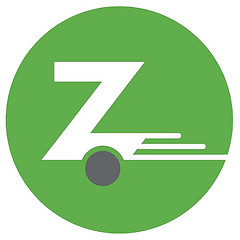

Online Résumé
Experience

Video Production Assistant at MSOE
In the summer of 2015 I worked in MSOE's Digital Marketing departement. My duties involved shooting, editing, and publishing video; building props and acting (breifly!); and archiving lots of old video and audio tapes onto DVDs and CDs. Most of my time was spent working on the Welcome Week 2015 Trailer video.

Brand Ambassador at Zipcar
Independently worked at stations at Milwaukee events educating the public about the benefits of Zipcar. I was required to be knowlegeable about all product offerings and be able to clearly communicate the benefits (and limitations) to the public.